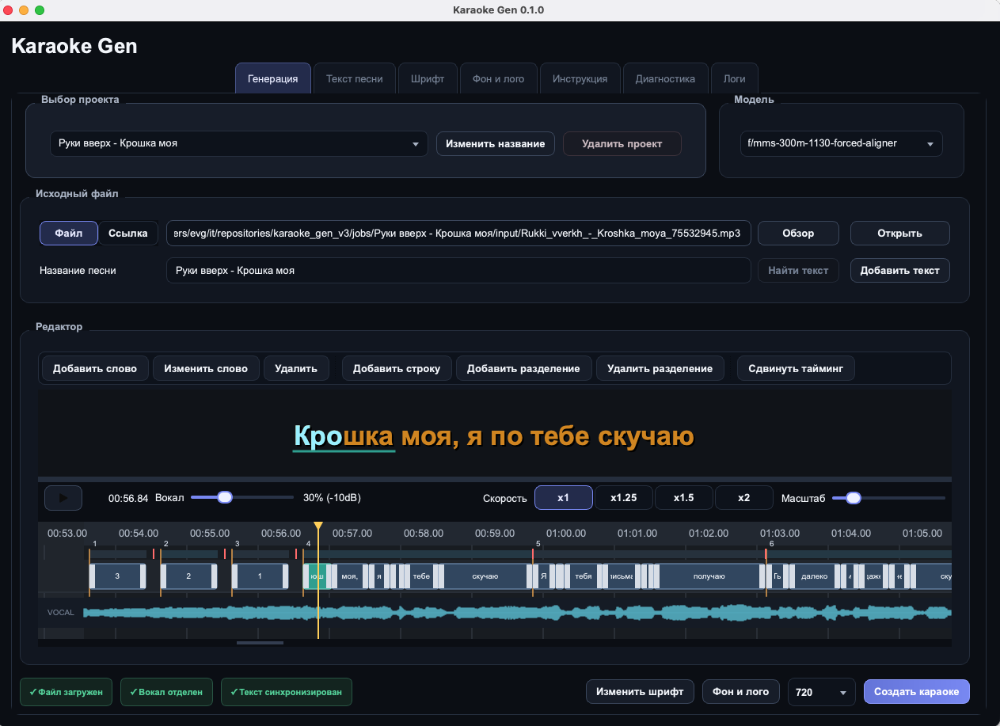

Разделение вокала и инструментала
Приложение анализирует аудиодорожку и подготавливает отдельный инструментал для чистого караоке.
Karaoke Gen отделяет вокал, синхронизирует текст и собирает готовое видео — без сложного монтажа и переключения между приложениями.
Локальная обработкаЭкспорт в видеоБез подписки на старте

От исходного трека до готового ролика. Karaoke Gen берет на себя техническую часть, оставляя вам контроль над результатом.
Приложение анализирует аудиодорожку и подготавливает отдельный инструментал для чистого караоке.
Слова выравниваются по аудио, чтобы подсветка появлялась в нужный момент.
Точная последовательная подсветка помогает зрителю легко следить за строкой.
Выберите оформление текста и акцентные цвета под визуальный язык проекта.
Получите цельный видеофайл, готовый для публикации и просмотра.
Основные этапы выполняются на вашем Mac. Исходные медиа остаются частью локального рабочего процесса.
Понятный рабочий процесс без ручной сборки десятков дорожек и эффектов.
Выберите исходное видео или аудиотрек на компьютере.
Приложение отделит вокал и синхронизирует текст.
Выберите цвета, оформление и проверьте результат.
Сохраните готовый ролик для публикации или просмотра.
Karaoke Gen помогает быстро собирать аккуратные караоке-видео без сложного монтажа — для каналов, кавер-проектов, вечеринок и коротких видеоформатов.
Экспорты покупаются пакетами: чем больше пакет, тем ниже цена одного готового видео.
99 ₽ за 1 экспорт
69.8 ₽ за 1 экспорт
59.9 ₽ за 1 экспорт
51.6 ₽ за 1 экспорт
43.8 ₽ за 1 экспорт
36.9 ₽ за 1 экспорт
Рабочий процесс спроектирован вокруг приложения на вашем компьютере, чтобы сократить лишние перемещения исходных материалов.
Скачайте приложение для macOS и создайте первое караоке-видео уже сегодня.
Скачать DMGmacOS · ~350 MB